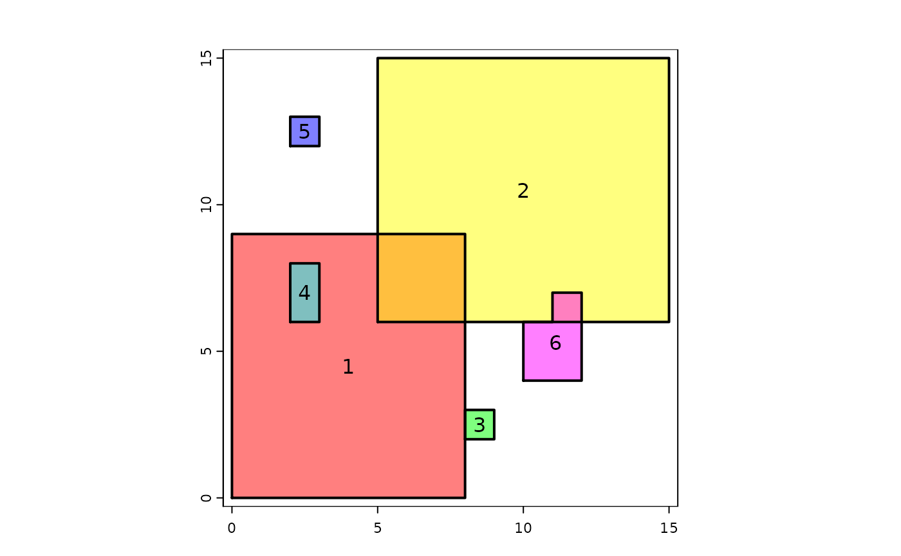
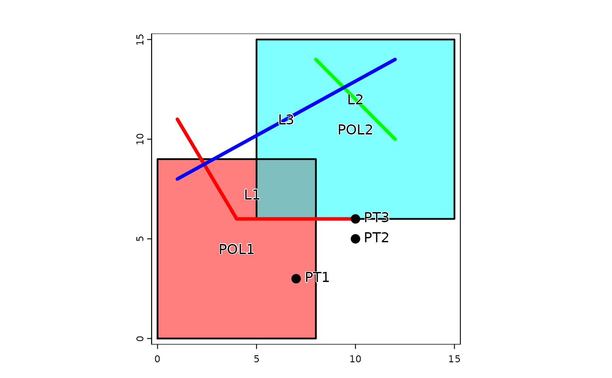

relate.RdGet a matrix indicating the presence or absence of spatial relationships between geometries.
# S4 method for SpatVector,SpatVector
relate(x, y, relation)
# S4 method for SpatVector,SpatVector
is.related(x, y, relation)
# S4 method for SpatVector,missing
relate(x, y, relation, pairs=FALSE, symmetrical=FALSE)SpatVector or SpatExtent
missing or as for x
character. One of "intersects", "touches", "crosses", "overlaps", "within", "contains", "covers", "coveredby", "disjoint". Or a "DE-9IM" string such as "FF*FF****". See wikipedia or geotools doc
logical. If TRUE a "from", "to" matrix is returned for the cases where the requested relation is TRUE
logical. If TRUE and pairs=TRUE, the relation between a pair is only included once. For example, the relation between geometry 1 and 3 is included, but the relation between 3 and 1 is not. Note that whole some relationships are symmetrical (e.g. "touches"), but that others are not (e.g. "within")
matrix (relate) or vector (is.related)
# polygons
p1 <- vect("POLYGON ((0 0, 8 0, 8 9, 0 9, 0 0))")
p2 <- vect("POLYGON ((5 6, 15 6, 15 15, 5 15, 5 6))")
p3 <- vect("POLYGON ((8 2, 9 2, 9 3, 8 3, 8 2))")
p4 <- vect("POLYGON ((2 6, 3 6, 3 8, 2 8, 2 6))")
p5 <- vect("POLYGON ((2 12, 3 12, 3 13, 2 13, 2 12))")
p6 <- vect("POLYGON ((10 4, 12 4, 12 7, 11 7, 11 6, 10 6, 10 4))")
p <- rbind(p1, p2, p3, p4, p5, p6)
plot(p, col=rainbow(6, alpha=.5))
lines(p, lwd=2)
text(p)

## relate SpatVectors
relate(p1, p2, "intersects")
#> [,1]
#> [1,] TRUE
relate(p1, p3, "touches")
#> [,1]
#> [1,] TRUE
relate(p1, p5, "disjoint")
#> [,1]
#> [1,] TRUE
relate(rbind(p1, p2), p4, "disjoint")
#> [,1]
#> [1,] FALSE
#> [2,] TRUE
## relate geometries within SpatVectors
# which are completely separated?
relate(p, relation="disjoint")
#> [,1] [,2] [,3] [,4] [,5] [,6]
#> [1,] FALSE FALSE FALSE FALSE TRUE TRUE
#> [2,] FALSE FALSE TRUE TRUE TRUE FALSE
#> [3,] FALSE TRUE FALSE TRUE TRUE TRUE
#> [4,] FALSE TRUE TRUE FALSE TRUE TRUE
#> [5,] TRUE TRUE TRUE TRUE FALSE TRUE
#> [6,] TRUE FALSE TRUE TRUE TRUE FALSE
# which touch (not overlap or within)?
relate(p, relation="touches")
#> [,1] [,2] [,3] [,4] [,5] [,6]
#> [1,] FALSE FALSE TRUE FALSE FALSE FALSE
#> [2,] FALSE FALSE FALSE FALSE FALSE FALSE
#> [3,] TRUE FALSE FALSE FALSE FALSE FALSE
#> [4,] FALSE FALSE FALSE FALSE FALSE FALSE
#> [5,] FALSE FALSE FALSE FALSE FALSE FALSE
#> [6,] FALSE FALSE FALSE FALSE FALSE FALSE
# which overlap (not merely touch, and not within)?
relate(p, relation="overlaps")
#> [,1] [,2] [,3] [,4] [,5] [,6]
#> [1,] FALSE TRUE FALSE FALSE FALSE FALSE
#> [2,] TRUE FALSE FALSE FALSE FALSE TRUE
#> [3,] FALSE FALSE FALSE FALSE FALSE FALSE
#> [4,] FALSE FALSE FALSE FALSE FALSE FALSE
#> [5,] FALSE FALSE FALSE FALSE FALSE FALSE
#> [6,] FALSE TRUE FALSE FALSE FALSE FALSE
# which are within (not merely overlap)?
relate(p, relation="within")
#> [,1] [,2] [,3] [,4] [,5] [,6]
#> [1,] TRUE FALSE FALSE FALSE FALSE FALSE
#> [2,] FALSE TRUE FALSE FALSE FALSE FALSE
#> [3,] FALSE FALSE TRUE FALSE FALSE FALSE
#> [4,] TRUE FALSE FALSE TRUE FALSE FALSE
#> [5,] FALSE FALSE FALSE FALSE TRUE FALSE
#> [6,] FALSE FALSE FALSE FALSE FALSE TRUE
# do they touch or overlap or are within?
relate(p, relation="intersects")
#> [,1] [,2] [,3] [,4] [,5] [,6]
#> [1,] TRUE TRUE TRUE TRUE FALSE FALSE
#> [2,] TRUE TRUE FALSE FALSE FALSE TRUE
#> [3,] TRUE FALSE TRUE FALSE FALSE FALSE
#> [4,] TRUE FALSE FALSE TRUE FALSE FALSE
#> [5,] FALSE FALSE FALSE FALSE TRUE FALSE
#> [6,] FALSE TRUE FALSE FALSE FALSE TRUE
all(relate(p, relation="intersects") ==
(relate(p, relation="overlaps") |
relate(p, relation="touches") |
relate(p, relation="within")))
#> [1] FALSE
#for polygons, "coveredby" is "within"
relate(p, relation="coveredby")
#> [,1] [,2] [,3] [,4] [,5] [,6]
#> [1,] TRUE FALSE FALSE FALSE FALSE FALSE
#> [2,] FALSE TRUE FALSE FALSE FALSE FALSE
#> [3,] FALSE FALSE TRUE FALSE FALSE FALSE
#> [4,] TRUE FALSE FALSE TRUE FALSE FALSE
#> [5,] FALSE FALSE FALSE FALSE TRUE FALSE
#> [6,] FALSE FALSE FALSE FALSE FALSE TRUE
# polygons, lines, and points
pp <- rbind(p1, p2)
L1 <- vect("LINESTRING(1 11, 4 6, 10 6)")
L2 <- vect("LINESTRING(8 14, 12 10)")
L3 <- vect("LINESTRING(1 8, 12 14)")
lns <- rbind(L1, L2, L3)
pts <- vect(cbind(c(7,10,10), c(3,5,6)))
plot(pp, col=rainbow(2, alpha=.5))
text(pp, paste0("POL", 1:2), halo=TRUE)
lines(pp, lwd=2)
lines(lns, col=rainbow(3), lwd=4)
text(lns, paste0("L", 1:3), halo=TRUE)
points(pts, cex=1.5)
text(pts, paste0("PT", 1:3), halo=TRUE, pos=4)

relate(lns, relation="crosses")
#> [,1] [,2] [,3]
#> [1,] FALSE FALSE TRUE
#> [2,] FALSE FALSE TRUE
#> [3,] TRUE TRUE FALSE
relate(lns, pp, relation="crosses")
#> [,1] [,2]
#> [1,] TRUE FALSE
#> [2,] FALSE FALSE
#> [3,] TRUE TRUE
relate(lns, pp, relation="touches")
#> [,1] [,2]
#> [1,] FALSE TRUE
#> [2,] FALSE FALSE
#> [3,] FALSE FALSE
relate(lns, pp, relation="intersects")
#> [,1] [,2]
#> [1,] TRUE TRUE
#> [2,] FALSE TRUE
#> [3,] TRUE TRUE
relate(lns, pp, relation="within")
#> [,1] [,2]
#> [1,] FALSE FALSE
#> [2,] FALSE TRUE
#> [3,] FALSE FALSE
# polygons can contain lines or points, not the other way around
relate(lns, pp, relation="contains")
#> [,1] [,2]
#> [1,] FALSE FALSE
#> [2,] FALSE FALSE
#> [3,] FALSE FALSE
relate(pp, lns, relation="contains")
#> [,1] [,2] [,3]
#> [1,] FALSE FALSE FALSE
#> [2,] FALSE TRUE FALSE
# points and lines can be covered by polygons
relate(lns, pp, relation="coveredby")
#> [,1] [,2]
#> [1,] FALSE FALSE
#> [2,] FALSE TRUE
#> [3,] FALSE FALSE
relate(pts, pp, "within")
#> [,1] [,2]
#> [1,] TRUE FALSE
#> [2,] FALSE FALSE
#> [3,] FALSE FALSE
relate(pts, pp, "touches")
#> [,1] [,2]
#> [1,] FALSE FALSE
#> [2,] FALSE FALSE
#> [3,] FALSE TRUE
relate(pts, lns, "touches")
#> [,1] [,2] [,3]
#> [1,] FALSE FALSE FALSE
#> [2,] FALSE FALSE FALSE
#> [3,] TRUE FALSE FALSE